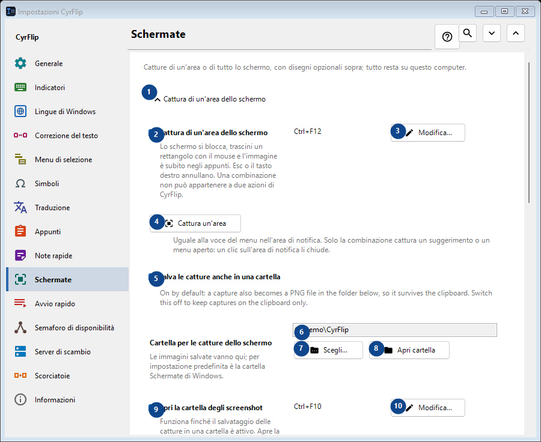
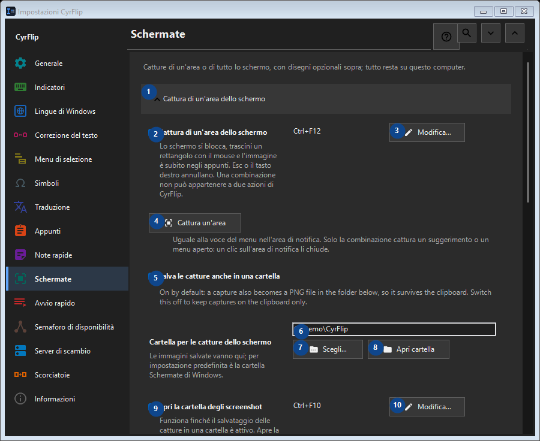

Schermate
A cosa serve
Catture di un'area o di tutto lo schermo, con disegni opzionali sopra; tutto resta su questo computer.


Ordine delle operazioni
Le impostazioni si applicano subito. Non serve un ordine preciso; usa i gruppi qui sotto.
Elementi
1. Cattura di un'area dello schermo
Usa questo comando per l’azione indicata. Leggi ogni richiesta di conferma prima di accettare.
Le tue scorciatoie2. Cattura di un'area dello schermo
Lo schermo si blocca, trascini un rettangolo con il mouse e l'immagine è subito negli appunti. Esc o il tasto destro annullano. Una combinazione non può appartenere a due azioni di CyrFlip.
Le tue scorciatoie3. Modifica - Cattura di un'area dello schermo
Usa questo comando per l’azione indicata. Leggi ogni richiesta di conferma prima di accettare.
Le tue scorciatoie4. Cattura un'area
Uguale alla voce del menu nell'area di notifica. Solo la combinazione cattura un suggerimento o un menu aperto: un clic sull'area di notifica li chiude.
Le tue scorciatoie5. Salva le catture anche in una cartella
On by default: a capture also becomes a PNG file in the folder below, so it survives the clipboard. Switch this off to keep captures on the clipboard only.
Le tue scorciatoie6. Cartella per le catture dello schermo
Scegli o inserisci il valore indicato dall’etichetta vicina. Controllalo prima di continuare.
Le tue scorciatoie7. Scegli - Cartella per le catture dello schermo
Usa questo comando per l’azione indicata. Leggi ogni richiesta di conferma prima di accettare.
Le tue scorciatoie8. Apri cartella - Cartella per le catture dello schermo
Usa questo comando per l’azione indicata. Leggi ogni richiesta di conferma prima di accettare.
Le tue scorciatoie9. Apri la cartella degli screenshot
Funziona finché il salvataggio delle catture in una cartella è attivo. Apre la cartella in cui CyrFlip scrive le catture. Una combinazione non può essere assegnata a due azioni di CyrFlip.
Le tue scorciatoie10. Modifica - Apri la cartella degli screenshot
Usa questo comando per l’azione indicata. Leggi ogni richiesta di conferma prima di accettare.
Le tue scorciatoie11. Cattura di tutto lo schermo
Usa questo comando per l’azione indicata. Leggi ogni richiesta di conferma prima di accettare.
Le tue scorciatoie12. Cattura di tutto lo schermo
Una pressione: tutti gli schermi vengono catturati come un'unica immagine, direttamente negli appunti. Nulla si blocca sullo schermo.
Le tue scorciatoie13. Modifica - Cattura di tutto lo schermo
Usa questo comando per l’azione indicata. Leggi ogni richiesta di conferma prima di accettare.
Le tue scorciatoie14. Cattura tutto lo schermo
Uguale alla voce del menu nell'area di notifica "Cattura di tutto lo schermo".
Le tue scorciatoie15. Disegna sulle catture
Usa questo comando per l’azione indicata. Leggi ogni richiesta di conferma prima di accettare.
Le tue scorciatoie16. Disegna sulle catture
Dopo la cattura l'immagine congelata resta sullo schermo: disegnate ovale, rettangoli, linee e frecce.
Le tue scorciatoie17. Cattura di un'area con disegno
Capture a selected region and draw on it. One chord cannot belong to two CyrFlip actions.
Le tue scorciatoie18. Modifica - Cattura di un'area con disegno
Usa questo comando per l’azione indicata. Leggi ogni richiesta di conferma prima di accettare.
Le tue scorciatoie19. Cattura di tutto lo schermo con disegno
Capture every display as one picture and draw on it. One chord cannot belong to two CyrFlip actions.
Le tue scorciatoie20. Modifica - Cattura di tutto lo schermo con disegno
Usa questo comando per l’azione indicata. Leggi ogni richiesta di conferma prima di accettare.
Le tue scorciatoie21. Cattura un'area e disegna
Uguale alla combinazione "cattura di un'area con disegno".
Le tue scorciatoie22. Cattura tutto lo schermo e disegna
Uguale alla combinazione "cattura di tutto lo schermo con disegno".
Le tue scorciatoie